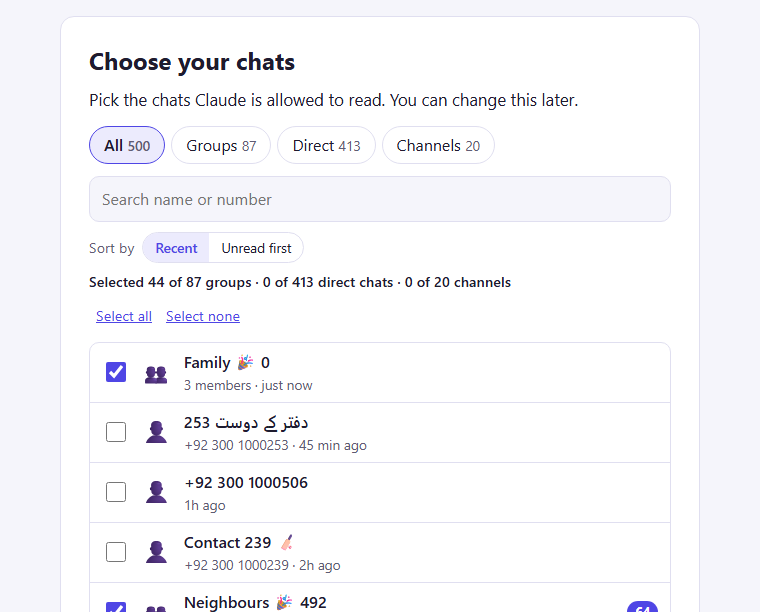

Daily briefs, mentions, bills and payment screenshots, and buyers to follow up, from the chats you pick. It runs on your own computer, and your messages stay there.
Free and open source. Needs Claude Desktop and your phone with WhatsApp. All versions

Get the file for your computer above. It is one .mcpb file.
Double-click the file and click Install in Claude Desktop. If nothing happens: Settings, Extensions, Advanced settings, Install Extension, and pick the file.
In a new chat say "Set up WhatsApp", scan the QR code with your phone (Linked devices), and pick the chats Claude may read.